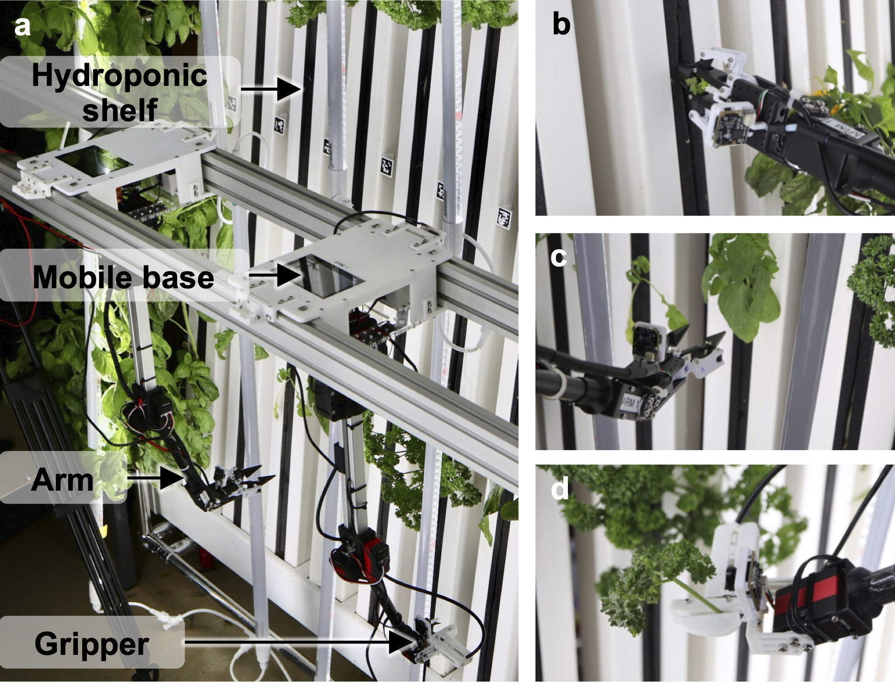
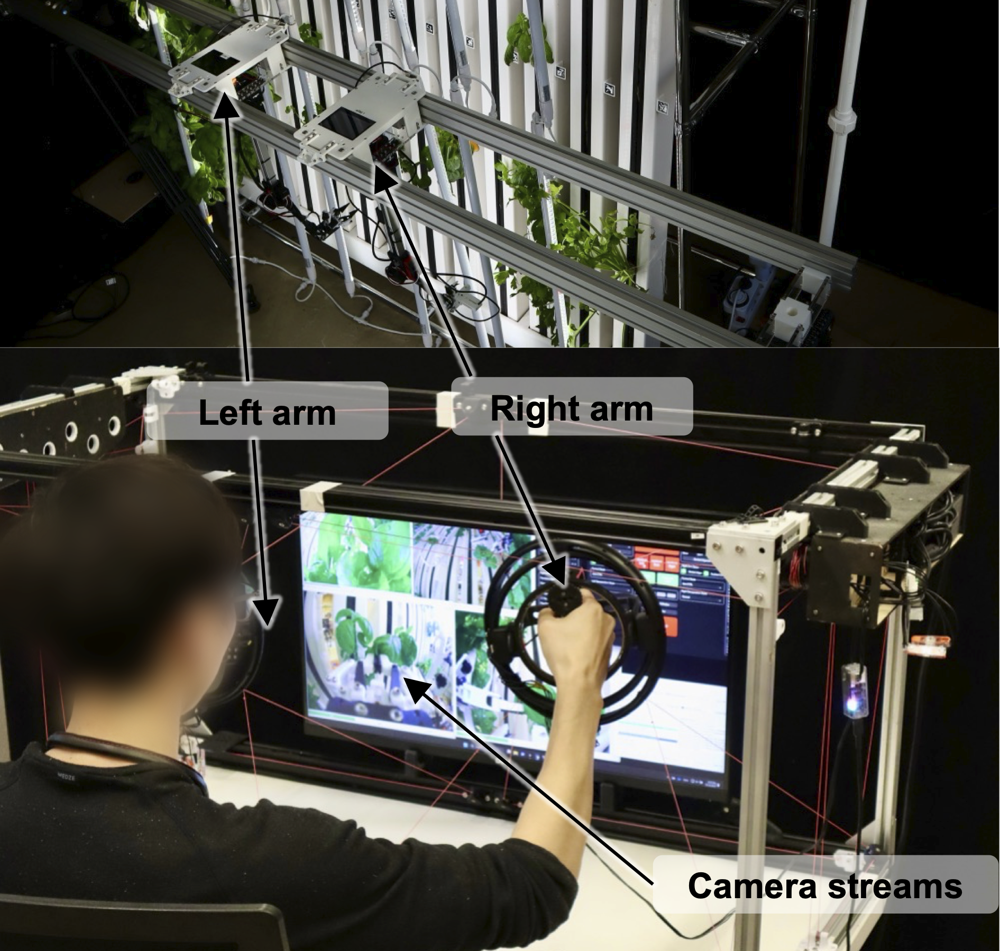
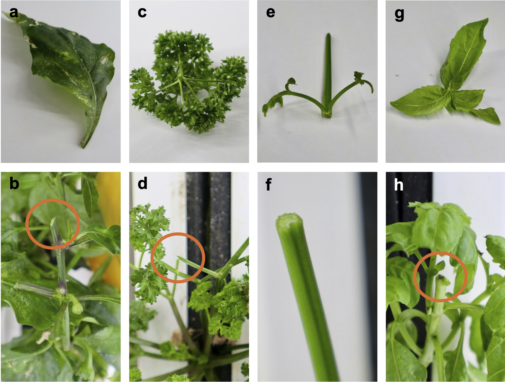

Robotic base
- 8 degrees of freedom.
- Modular end effectors.

CREATE Lab, EPFL - Research Fellowship
Plants go through multiple growth stages, each demanding unique interactions. An agricultural robot must adapt to these changes to enable autonomous crop management.




First author paper submitted to the International Conference on Intelligent Robots & Systems (IROS 2026).